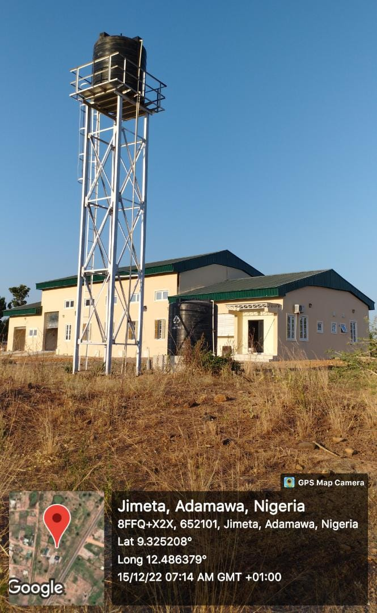
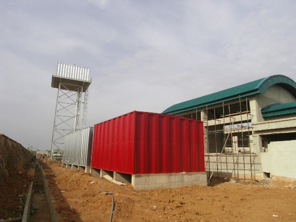

2022
This project involves the Design and Construction of the National Research Institute for Chemical Technology (NARICT) Outstation/Entrepreneurship Centers in Six Geopolitical Zones of the Country, Northeast Yola: with over 1,500 sq. of office space and state-of-the-art conference room, and a Pilot Plant facility (To Produce Sodium Silicate From Sand Deposit) completed at 300 Million Naira with funding from NARICT


Led a team of 10 built environment professionals on the Engineering Assessment of Health Facility Laboratory Upgrade for FHI 360 (Adamawa Team Leader). This exercise led to the production of contract documents for projects in six local governments of Adamawa State. Proposals for 12 washrooms; 35 toilets; 4 Sample collection units; Sanitary appliances, Water supply, Waste disposal, Plumbing, and Protective installations..

Managed the supply and installation of water reservoir surface ground steel sectional tank; 3nr 48,000ltrs capacity, overall size: 4.0m x 4.0m x3.0m (3mm side/top and 5mm thick bottom plate) complete with 50mm dia. ball valve in 225mm thick reinforced concrete wall and top slab to structural engineer's details. I successfully supervised contracts of 3 specialist subaward contractors and saved N5 million (Gross) excessive and non-contractual claims for the client.

Precontract administration of the tender for the Construction of 60 Boreholes /Construction of 110 Latrines and Rehabilitation of 75 Latrines with reference ITB Nr: ITB/NG/MBI/2017/001 & amp; 002 by the Danish Refugee Council (DRC), with funding from UNICEF.

Participated in the engineering assessment; of water facilities in Geidam town, Geidam local government area Yobe state by the North East Regional Initiative (NERI). Supervised the development of Seven (7) boreholes by airlifting at seven different locations, fabrication and erection of a Steel Tank Stand with 10,000 gallons’ (of approximately 25,000 liters) Steel Overhead Tank at one location, supply and installation of Generators at six different locations, supply and installation of five (5) numbers 5.5HP submersible pumps at four different locations, and installation of solar panels at one location in Geidam LGA, Yobe State.

As RCCG water and sanitation CSR program lead, I led a team that conducted a geophysical survey to locate a suitable borehole site, mobilize, drill, develop and test a functional borehole with the installation of casings and screens for a minimum depth of 80metres; complete with a Lowara submersible pump with an efficiency of 10 cubic meters per hour capacity at 150 - 240 head with 15 kW motor complete with pump starter.

Led a team of engineers and specialist subaward contractor that install Package type water treatment plant with Aeration, sedimentation; Flocculation, Mn Fe Oxidation, Ph-correction, Filtration and Chlorination operation stages comprising aeration tank size 2440 x 1220 x 1500 high; 3 compartments SATEC IRS 40 in stainless steel producing drinking water through filtration system; SATEC type model FML30; complete with interconnecting pipework, compressor, dosing pump, circulating pump, backwash pump and weatherproof control panel fabricated from heavy gauge sheet; complete with starter consist of three main fuses, contactor and over load transformer.

This project involves the Design and Construction of 12,000 seating capacity stadium on over 40,000 sq. site layout including VIP stands, popular stands, changing rooms, maintenance rooms and state-of-the-art electro-mechanical services with synthetic football pitch completed at 3 Billion Naira..

Led a team of provincial executive council members that organized 3-day province-based young adults and youth affair convention titled ‘Christ Ambassadors’ held from 12th to 14th April 2019 with over 300 young adults and youths from the three senatorial districts of Adamawa State. The participants were trained in various skills, ranging from; computer appreciation, google digital skills, cinematography, website design, soft interior decoration, baking, fish farming, home hygienic products, laptop repairs, desktop publishing, project management, and lots more. The outcome of the program yielded youths with marketable skill sets that brought restoration to those living in poverty across the province

Pre-contract administration of Central Bank of Nigeria Intervention project in Federal Polytechnic Kaltungo. The project involves the construction of three storey school of science, two storey solar enhanced library and provision of power substation and external works situated on over 20,000 sq. of site area and estimated at over N3,500,000,000.00

Developed and maintained an updated database of youths and young adults in the region and created an automated monthly assessment template using Microsoft Excel that enhances productivity and on-the-spot evaluation by at least 75%